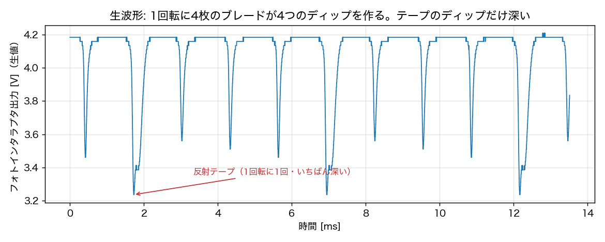
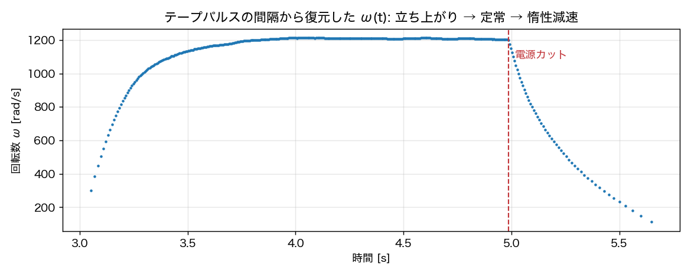
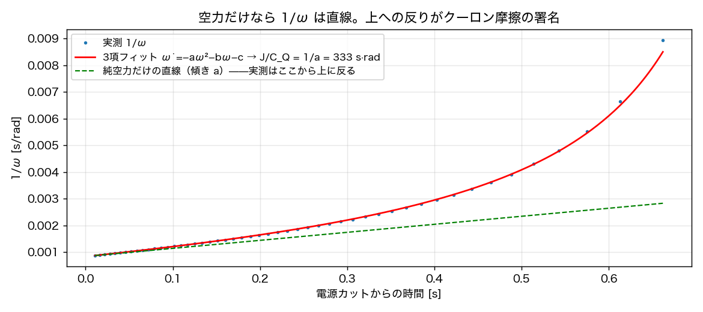

第4章の表に出てくる \(J/C_Q = 335\ \mathrm{s\,rad}\) という数字が どうやって測られたのか、実際の波形を追いながら再現します。 この試験のうれしさは、電気の知識（\(K_e\) や \(R\)）を一切使わないことです。 電源を切った後の世界には、慣性と空気しかいません。
A.1 原理 — 電源を切れば、残るのは慣性と空気だけ
回転中のプロペラの電源を突然切ると、電流はゼロになり、 運動方程式はこれだけになります:
これは変数分離ですぐ解けますが、もっと便利な形があります。 両辺を \(-J\omega^2\) で割ると:
つまり \(1/\omega\) を時間に対してプロットすると直線になり、 その傾きがそのまま \(C_Q/J\) です。カーブフィットの前に、 「直線になるか」を目で確かめられる——同定ではこの形の見通しの良さが効きます。
A.2 セットアップ — 回転数は光で数える
回転数の計測には反射式フォトインタラプタ（発光と受光が並んだ素子。 正面に反射物が来ると出力が変わる）を使い、プロペラに向けて固定します。 ブレードが通過するたびに出力がへこみ、さらに1枚のブレード根元に貼った 反射テープが1回転に1回、ひときわ深いへこみを作ります。 出力はオシロスコープで記録します。使うのは時刻情報だけなので、 振幅の較正は不要です。

A.3 ω(t) を復元する
テープパルスの時刻列 \(t_k\) が取れれば、各回転の平均角速度は \(\omega_k = 2\pi/(t_{k+1}-t_k)\) です。記録全体に適用すると:

A.4 1/ω は直線になる——はずが、反っている

よく見ると、実測は直線から上に反っています。犯人は軸受などの クーロン摩擦（速度によらない一定トルク \(\tau_c\)）です。 摩擦を含めた運動方程式で書き直すと:
第2項は \(\omega\) が小さくなるほど効くので、減速の後半で直線から外れる—— 図の反りはこの式の署名そのものです。そこで直線ではなく 3項モデルを全域フィットすると、\(J/C_Q = 1/a \approx 333\ \mathrm{s\,rad}\) と摩擦 \(\tau_c \approx 9.4\times10^{-6}\ \mathrm{N\,m}\) が同時に得られます （本編の確定値 335 は前処理の細部が異なる解析で、差は1%未満）。 安易に「直線の傾き」を全域で取ると、摩擦の分だけ傾きが水増しされ、 \(J/C_Q\) を4割も小さく見積もってしまいます——モデルの外にある物理は、 無視すると必ず数字を曲げます。
A.5 結果と使い道
- \(J/C_Q = 335\ \mathrm{s\,rad}\)（3項フィット・確定値）、 \(\tau_c \approx 9.5\times10^{-6}\ \mathrm{N\,m}\)
- \(C_Q = 4.10\times10^{-11}\)（ベンチ実測）と合成して \(J_{mp} = 1.375\times10^{-8}\ \mathrm{kg\,m^2}\)—— 付録Bの写真法・分解実測と独立に照合できる
- ヨー軸の零点 \(\tau_z = J_{mp}/(2C_Q\omega_0)\)（第4章）は 実は \(J/C_Q\) だけで決まる: \(\tau_z = (J/C_Q)/(2\omega_0) = 45.7\ \mathrm{ms}\)
データ: data/stampfly_prop_round_test.wfm（2秒 Duty10% → カット）。 解析の再現: notes/calc/coastdown_id.py（本解析）、 notes/calc/make_appendix_figs.py（本ページの図）。